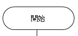
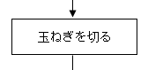
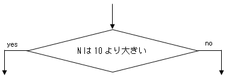
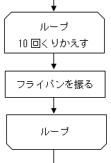

第0回の目標：アルゴリズムとその表現方法を確認する。
何かをするときの手順をアルゴリズムという。
たとえば上はカレーを作るときの手順であるから、これはカレーを作るアルゴリズムである。
アルゴリズムを表現する方法の一つとして、フローチャートがある。
上はカレーを作るアルゴリズムをフローチャートで表現したものである。
フローチャートの書き方にはルールがあり、そのうちいくつかを示す。
開始/終了：手順の開始または終了は下のように丸で表す。
処理：手順のひとつひとつは下のように四角で表す。
条件分岐：場合によって手順を変える場合、下のようにひし形で表す。
くりかえし：くりかえしを下のように書くこともある
これらを矢印でつないで、手順を図示するのがフローチャートの書き方である。
例題1 何かをするときの手順を何というか
コンピュータが処理できるようアルゴリズムを記述することをプログラミングという。
プログラミングにはプログラミング言語を用いる。プログラミング言語で書かれたアルゴリズムをプログラムという。
なお、コンピュータが処理できるのは機械語で書かれたものだけであるが、プログラミング言語で書かれたアルゴリズムは機械語に変換することができる。この変換をコンパイルという。人間が明示的にコンパイルするタイプのプログラミング言語と、自動的にコンパイルされるタイプのプログラミング言語がある。
C言語という古くから有名なプログラミング言語があり、VBAやpythonやjavascriptは基本的な文法がC言語に似ている。この講座ではjavascriptを題材にプログラミングをしてみる。javascriptは自動的にコンパイルがなされるタイプの言語である。
例題2 アルゴリズムを記述することを何というか
アルゴリズムとプログラムは似ているが少し違う。アルゴリズムの方が抽象的であり、同じアルゴリズムを別々のプログラミング言語で書くと、別々のプログラムが出来上がる。
ちなみに、同じアルゴリズムを一つのプログラミング言語で書くとしても、正しい書き方が何通りもあることが多い。
高校生の情報の学習としては、特定のプログラミング言語の文法を覚えるというよりは、アルゴリズムを理解したり、作り出したりする力をつけて欲しいわけである。
例えば数学では2次関数のグラフの頂点の座標を求める手順が知られているが、これはアルゴリズムの1例であり、その気になって探せばアルゴリズムは身の回りに沢山あることに気づく。
つまり、いわゆる普通の勉強を通してでもアルゴリズムを理解したり、作りだしたりする力は鍛えられるのであるが、具体的なプログラミング言語を用いてプログラミングすることで、かなり直接的にそれらを訓練することができる。
次回以降でjavascriptの文法を紹介する。(文法を覚えないとプログラミングできないので)覚えて欲しいが、その上でアルゴリズムを問うていることに注意して欲しい。
例題3 アルゴリズムとプログラムのうち、抽象的なのはどちらか？